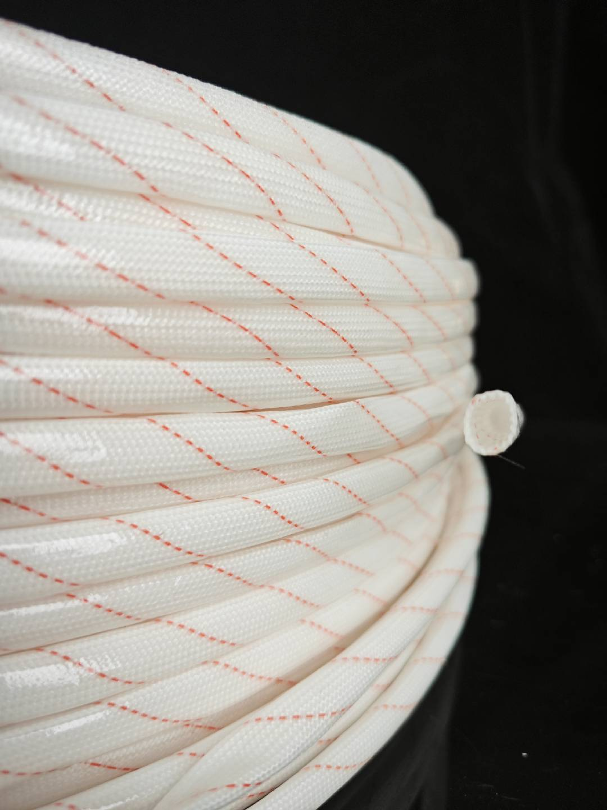
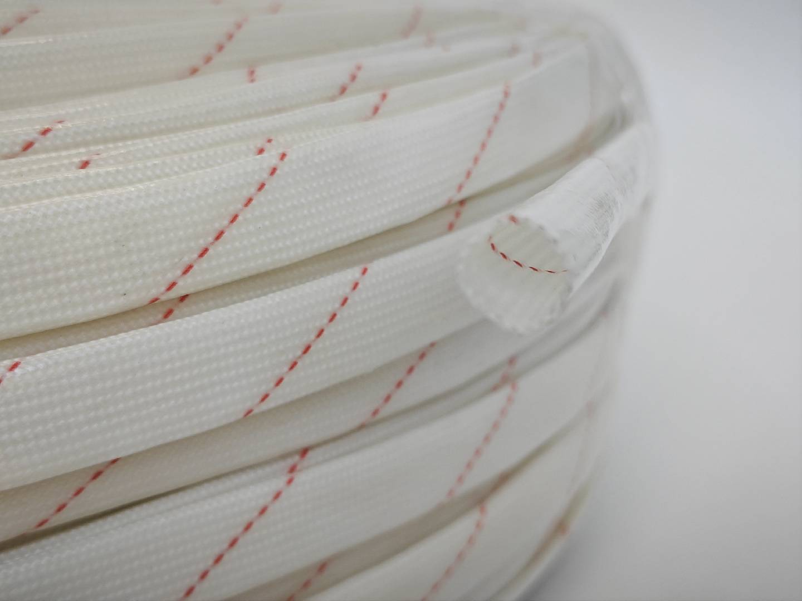

黄腊管
PVC COATED FIBERGLASS TUBE
黄腊管
PVC涂覆玻璃纤维管 经济型
黄腊管是一种传统绝缘材料，采用玻璃纤维编织管涂覆PVC树脂制成。因外观呈淡黄色而得名，具有成本低、绝缘性能良好的特点，是经济实用的绝缘保护材料。
技术参数
| 耐压等级 | 1.5KV - 4KV |
| 连续使用温度 | -40°C ~ +130°C |
| 材质 | 玻璃纤维编织 + PVC涂层 |
| 外观 | 淡黄色（黄腊色） |
| 特点 | 经济实惠、传统可靠 |
应用领域
- 传统电机绕组绝缘
- 变压器绝缘保护
- 家用电器绝缘
- 经济型绝缘需求
产品细节展示
白色编织管带红色缝线

盘装产品展示

斜切端展示中空结构
为什么选择黄腊管？
成本低
经济实惠，性价比高
传统可靠
多年使用验证，稳定可靠
绝缘性好
满足基本绝缘需求